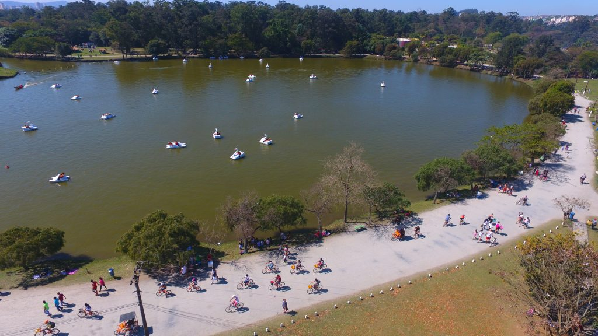
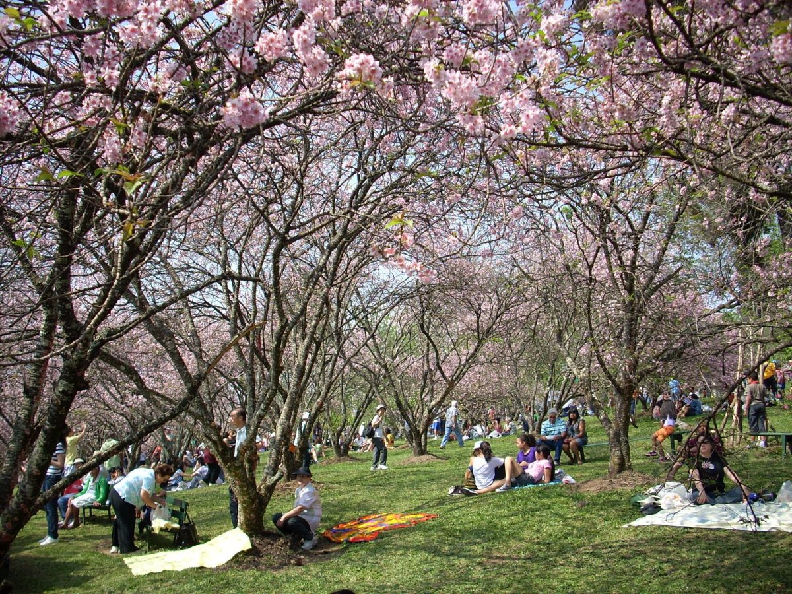
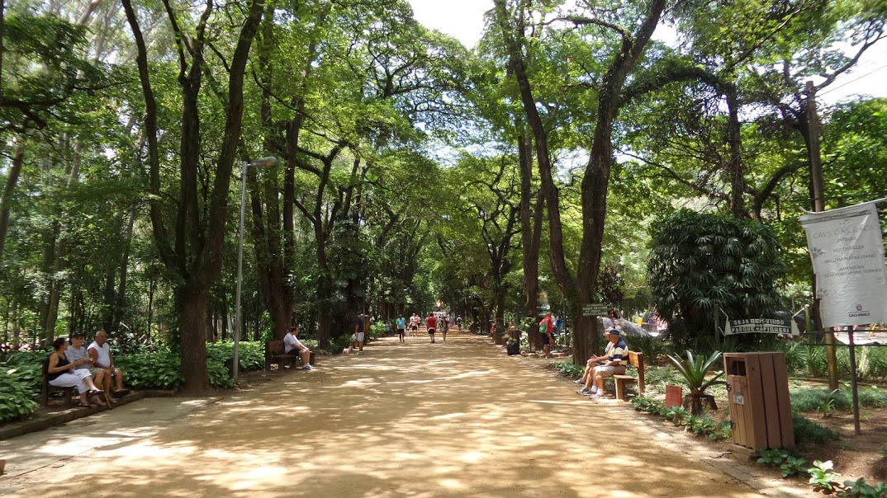

Top 3 parques Incriveis para conhecer em São Paulo Zona leste.

Zona lost, elo perdido, “nossa, que longe”, essas são algumas das expressões usadas quando se fala em zona leste. Cá entre nós, injustiça. Até porque longe depende do referencial. Da estação Sé até Itaquera, por exemplo, são aproximadamente 35 minutos. Tempo semelhante da viagem entre Sé e a estação Jabaquara. Mas vamos ao que interessa. Destacamos aqui 3 sugestões de passeios legais e baratos (alguns gratuitos) para você começar seu passeio pela região, no entanto, ainda há muitos outros atrativos que também estão à espera para serem desvendados.
1-Parque Ecológico Tietê.
Considerado uma das áreas verdes mais completas da cidade, o Parque Ecológico Tietê é muito além da vegetação no coração da zona leste da cidade. O parque recebe mensalmente cerca de 300.000 visitantes que desfrutam de uma infraestrutura que inclui: pista de atletismo e bicicross, 9 km de trilhas, 14 km de ciclovias, campos de futebol, teatro, academia, playground, e para reunir os amigos para um piquenique poderá usar uma das 12 churrasqueiras descobertas ou outras 9 cobertas, e para reservá-las apenas com 30 dias de antecedência. Só fiquem espertos com os quatis! Esses bichinhos sempre estão com vontade de comer e pegam mesmo da sua mão, caso você não ofereça. Tente resistir a esses fofinhos! Não é permitido levar animais domésticos. O aluguel da bicicleta custa a partir de R$ 7 por uma hora. Outro passeio bem concorrido é andar de pedalinho no lago. O aluguel por 30 minutos custa R$ 15 Site Parque Ecológico Tietê Avenida Dr. Assis Ribeiro, altura do nº 3.000 – Cangaíba. Diariamente das 8h às 17h. Grátis. De transporte público, pegue o metrô e desça na estação Penha. Pegue o ônibus Jardim Keralux e desça na entrada do parque. De trem da CPTM, desembarque na estação Engenheiro Goulart e vá andando até a entrada do parque.
2-Parque do Carmo.
Muito conhecido pelo Festival das Cerejeiras, esse parque possui o segundo maior bosque de cerejeiras fora do Japão, a árvore símbolo do país. Visitá-lo no período (final de julho até metade de agosto) do florescer das cerejeiras, definitivamente, fará seu piquenique muito mais bonito e florido, mas não desanime: todo ano há de ter renovação. Quem gosta de andar de skate pode fazer uso da pista especialmente criada para quem quer fazer manobras radicais. O parque tem churrasqueiras espalhadas em diversos pontos, quiosques, um lago e diversas espécies de animais. É muito comum durante a caminhada ou corrida na pista que circunda o lago ver os esquilos atravessando de um lado para outro. A pelada do final de semana também está garantida. O parque tem campo de futebol. As crianças também não ficam de fora. São três áreas com playground, além do museu de ecologia e um anfiteatro ao ar livre. Organize seu piquenique nos quiosques disponíveis ou – o mais legal, eu acho – sob as quaresmeiras e ipês e, prepare as lentes para os esquilos que correm por lá. Quer saber mais sobre a Festa das Cerejeiras e se programar para o próximo ano? Contamos anteriormente aqui. Site do Parque do Carmo Av. Afonso de Sampaio Souza, 951, Itaquera. Aberto todos os dias das 6h às 18h. Grátis. ÔNIBUS: Há outras linhas de ônibus como a 2522-10 Shopping C. L. Aricanduva – Vila Progresso, 3027-10 Shopping Aricanduva – Vila Minerva, 3406-10 Terminal Pq. D. Pedro II – Cohab Juscelino, 3760-10 Metrô Tatuapé – Jardim Cibele, 3760-42 Metrô Tatuapé – Jd. N. Sra. do Carmo e 3774-10 Metrô Tatuapé – Jd. Soares.
3-Parque do Piqueri.
No Tatuapé, na zona leste de São Paulo, fica um agradável parque com uma área verde de 97.200 m2. O local é bem bem arborizado, ideal para quem deseja caminhar, correr ou descansar à sombra das árvores. Possui ótima infraestrutura de lazer com pista de Cooper, bicicletário, campo de futebol de areia, quadras poliesportivas, aparelhos de ginástica, playgrounds, lago, palco para apresentações e até conchas de bocha. Para quem gosta de ler, há o Ponto de Leitura. É permitido passear com cachorro, mas não se pode andar de bicicleta, patins e skate. Como não há lanchonetes lá dentro, o ideal é trazer o próprio lanche e água ou comprar de ambulantes que ficam do lado de fora do parque. O parque possui cerca de 152 espécies de árvores como eucaliptos, sibipirunas, jatobá e bambuzal e também tem um lago. Mais informações e como chegar, acesse o site: Parque do Piqueri R. Tuiuti, 515 – Tatuapé Funcionamento: diariamente das 6h às 18h Tel (11) 2097-2213. Para chegar ao parque você deve descer na estação Tatuapé do metrô e caminhar cerca de 30 minutos até lá. Grátis.